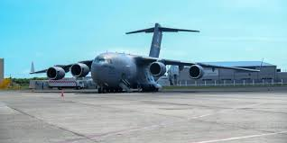

Gobierno anuncia aumento en la mayoría de los combustibles, incluido el GLP y el gasoil
Gobierno mantiene subsidios a combustibles por RD$145.8 millones; se registra variación de precio en siete productos
Por: Monica Vega
El Gobierno dominicano continuará subsidiando los principales combustibles del país con un monto 145.8 millones de pesos solo para la semana del 28 de junio al 4 de julio de 2025, informó este viernes el viceministro de Comercio Interno, Ramón Pérez Fermín.
A pesar del esfuerzo, se registrarán variaciones en los precios de siete productos derivados, incluyendo el GLP y el gasoil.
Según el funcionario, el subsidio total para los combustibles durante el período mencionado asciende a RD$145,812,000.00, lo que refleja el compromiso del Gobierno de mitigar el impacto de los precios internacionales en la economía local.
"Durante tres años hemos contenido el precio del GLP sin variación alguna. Lo hicimos por el peso que ese combustible tiene en los hogares, en el transporte y en la industria. Hoy, ese esfuerzo continua, pero con ajustes inevitables", explicó Pérez Fermín durante su alocución oficial.
Detalles del aumento
Combustible
Aumento
Gasolina Premium
RD$7.00 por galón
Gasolina Regular
RD$6.00 por galón
Gasoil Regular
RD$9.00 por galón
Gasoil Premium
RD$2.00 por galón
GLP
RD$4.00 por galón
Gas Natural
RD$7.00 por galón
Presidente Abinader entrega moderno Hospital Regional Universitario Dr. Ángel María Gatón, con 329 camas
Con esta obra, el Gobierno suma 24 infraestructuras de salud entregadas a nivel nacional, incluyendo 13 hospitales, 11 centros de diagnóstico y más de 1,300 camas hospitalarias
Por: Monica Vega
San Francisco de Macorís.El presidente Luis Abinader entregó este domingo el Hospital Regional Universitario Dr. Ángel María Gatón, un moderno centro de salud con 329 camas, 294 destinadas a hospitalización y 35 a cuidados intensivos, que fortalecerá la atención médica en toda la región Nordeste.
El nuevo hospital, una de las obras de salud más importantes del país, cuenta además con 32 consultorios, seis quirófanos, banco de sangre, farmacia, morgue y laboratorios clínicos, y generó alrededor de 5,900 empleos directos durante su construcción, impulsando la economía de la provincia Duarte.
"Con la entrega de este hospital, reafirmamos nuestro compromiso de mejorar la salud pública en la República Dominicana. Este centro no solo ofrecerá atención médica de calidad, sino que también contribuirá al desarrollo económico y social de la región Nordeste", afirmó el presidente Abinader durante el acto de inauguración.
El jefe de Estado felicitó al Ministerio de Vivienda y Edificaciones (Mived), al Servicio Nacional de Salud (SNS) y a las autoridades locales por el trabajo conjunto que permitió la conclusión de esta obra, al tiempo que reconoció el acompañamiento de los grupos sociales de la provincia Duarte, “que también ayudan a gobernar y a atender las necesidades del pueblo”.
Operaciones de Estados Unidos en aeropuertos dominicanos fueron autorizadas hasta abril de 2026
La operación incluye únicamente aviones cisterna y de transporte militar; no existe permiso para acciones bélicas o ataques preventivos. Personal será exclusivamente técnico

Por: Monica Vega
La autorización para que aeronaves estadounidenses operen temporalmente desde dos aeropuertos dominicanos, anunciada el miércoles por el Gobierno, forma parte de un esquema limitado, estrictamente técnico y plenamente sustentado en el marco jurídico bilateral que rige desde los acuerdos antidrogas de 1995 y su Protocolo ampliatorio de 2003. La operación se extenderá hasta abril del próximo año y se circunscribe a labores logísticas y de apoyo en misiones regionales de interdicción contra el narcotráfico.
Fuentes oficiales explicaron que la presencia aérea autorizada incluye únicamente aviones cisterna y aeronaves de transporte militar, necesarios para reabastecimiento, apoyo técnico y movilidad logística. No se trata de naves de combate ni de plataformas ofensivas, y no existe ninguna autorización para operaciones bélicas, ataques preventivos o acciones de fuerza iniciadas desde territorio dominicano. El personal que operará en suelo dominicano será exclusivamente técnico, sin funciones de combate ni participación en misiones ofensivas.
La cooperación está definida como no combatiente, en línea con los compromisos establecidos en el Protocolo de 2003, cuyo párrafo 19 ter.d permite expresamente "el aterrizaje y la permanencia temporal de aeronaves del orden de los Estados Unidos en aeropuertos internacionales dominicanos" con fines de reabastecimiento, asistencia y logística.
El personal estadounidense que estará estacionado en el país durante este período será exclusivamente técnico: tripulaciones, mecánicos, operadores de apoyo y personal de seguridad aeronáutica. No habrá tropas de combate ni unidades operativas desplegadas en funciones bélicas. En consonancia con el marco legal vigente, la República Dominicana mantiene control pleno sobre su territorio, su espacio aéreo y sus instalaciones aeroportuarias, y los movimientos autorizados deberán cumplir con los procedimientos establecidos en los artículos que regulan el uso del espacio aéreo (8 bis y 8 ter) y el tránsito de personal en operaciones no armadas.
La autorización firmada antier es resultado de largas y minuciosas negociaciones diplomáticas que se desarrollaron durante los últimos meses.
La canasta básica nacional sube de RD$46,420 a RD$47,534 entre enero y septiembre
El reciente aumento en los precios de la canasta familiar ha generado preocupación entre las familias de bajos recursos en todo el país, quienes enfrentan dificultades para cubrir sus necesidades básicas.
Por: Monica Vega
El costo de la canasta familiar nacional pasó de 46,420.68 pesos en enero a 47,534.46 pesos en septiembre de 2025, lo que representa un aumento absoluto de 1,113.78 pesos y un crecimiento de 2.4 % en los primeros nueve meses del año, según datos del Banco Central de la República Dominicana (BCRD)..
De acuerdo con la información publicada, el valor de la canasta registró incrementos casi consecutivos durante el citado período. En promedio, cada mes el costo aumentó en torno a 124 pesos, impulsado por las alzas en alimentos, transporte y servicios.
Por quintiles, el costo de la canasta también muestra incrementos proporcionales. En el quintil 1 (los hogares de menores ingresos), el costo subió de 27,828.58 en enero a 28,445.17 en septiembre, un 2.2 % más, mientras que en el quintil 5 (mayores ingresos) pasó de 75,490.79 pesos a 77,191.37 pesos, un aumento de 1,700.58 pesos en nueve meses. El quintil cinco fue el que más subió, equivalente a un 2.3 %.
En contraste, el menor aumento se registró en el Quintil 1 (menores ingresos), con 616.59 pesos, equivalente a 2.2 %. Esto refleja que, aunque el incremento fue generalizado, la canasta de los hogares de mayores ingresos subió más en términos absolutos y relativos. El Banco Central calcula el valor de la canasta familiar a partir de la Encuesta Nacional de Gastos e Ingresos de los Hogares (ENGIH 2018) y lo actualiza mensualmente según la variación del Índice de Precios al Consumidor (IPC).
Ultimo informe
El 07 de octubre, el Banco Central de la República Dominicana (BCRD) informó que el IPC registró una variación mensual de 0.34 % en septiembre 2025. Con este resultado, la inflación interanual medida desde septiembre de 2024 hasta septiembre de 2025 se ubicó en 3.76 %.
De acuerdo a datos del BCRD, el cálculo del IPC determina la inflación, es decir, este índice sirve para medir cómo han variado los precios en los bienes y servicios adquiridos por los hogares, por lo general en el espacio de un mes.
Detalla que un grupo de encuestadores expertos, coordinados por el Banco Central, visitan diariamente una muestra de establecimientos comerciales en los pueblos y ciudades de todo el país recogiendo los precios, para tener así una información veraz como base de cálculo del IPC. Este dato es tan relevante, que sirve como punto de partida para negociar los aumentos de salarios, o para revisar el importe de un alquiler año a año, entre otras utilidades.
Resumen de incremento de precio de los ultimos 4 años
 Por: Monica Vega
Por: Monica Vega
 Por: Monica Vega
Por: Monica Vega